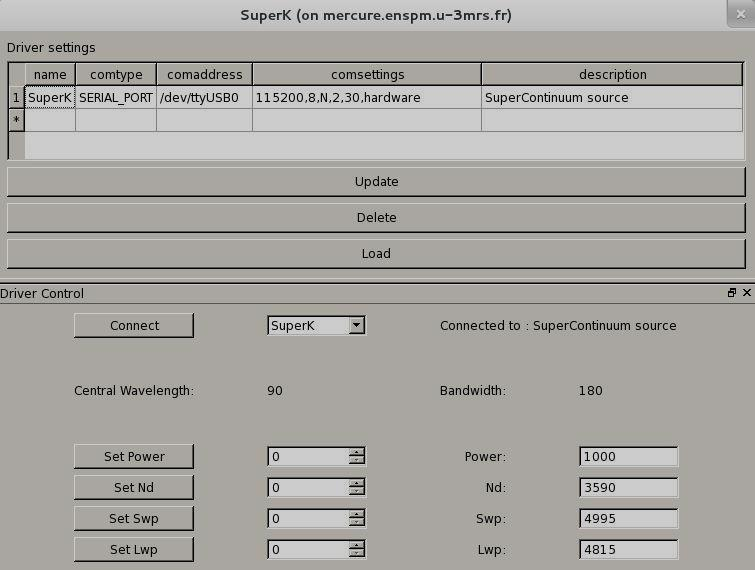

SUPERK devices are accessible through a CP210x module over serial RS485. Supported devices include SuperK VARIA from NKT Photonics (when enabled).

| name | This is a unique name given by the user defining the SuperK device instance. |
| comtype | The communication type (SERIAL_PORT). |
| comaddress | The device address (example: /dev/ttyUSB0). |
| comsettings | Serial settings: baudrate, databits, parity, stopbit, vtime, flow control. |
| description | A brief description of the device. |